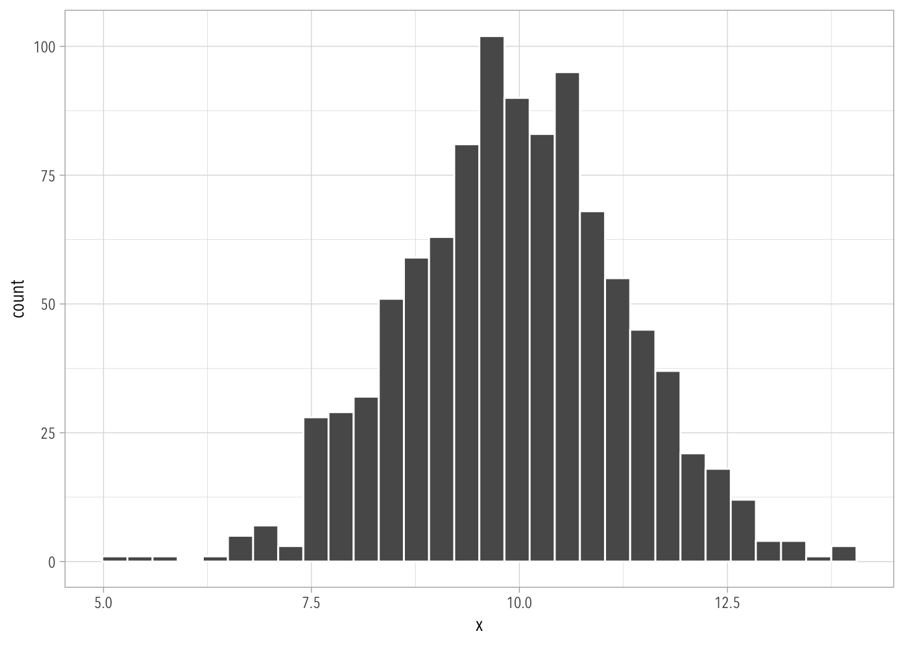
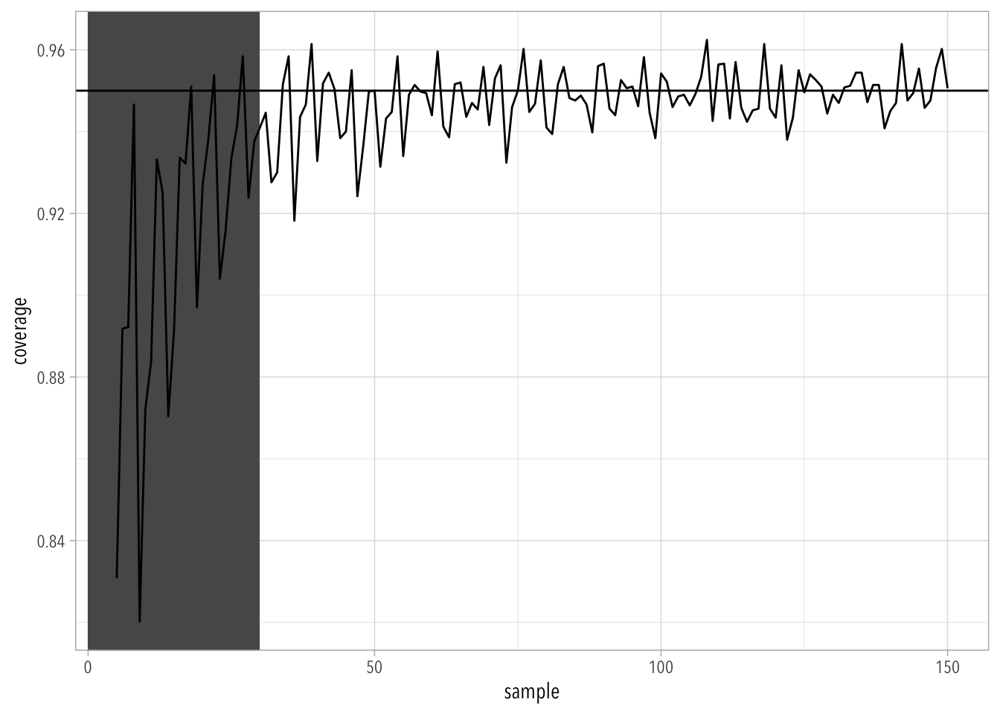

8 Solutions 4
8.1 Exercise
The probability that \(x\) is within one standard deviation \(\sigma\) away from the mean is roughly 68%.
The probability that \(x\) is within two standard deviations \(2\sigma\) away from the mean is roughly 95%.
8.2 Exercise
The quantile() function calculates the 25th, 50th, and 75th percentiles of a vector of numbers.
It also includes the minimum and maximum values:
Hey! I hope you remember that the median is the same as the 50th percentile.
8.3 Exercise
8.4 Exercise
Let \(x = x_1 + \dots + x_{20}\), the sum of 20 independent uniform(0, 1) random variables. In R, create 1000 simulations of \(x\) and plot their histogram.
Code
`stat_bin()` using `bins = 30`. Pick better value with `binwidth`.
Bonus
The real standard error is:
An estimate of the standard error for one sample:
Note
There is no “uniquely correct” way of simulating data.
For example, this is the way I would usually do it:
8.5 Exercise
Many introductory statistics textbooks say that “sample sizes equal to or greater than 30 are often considered sufficient for the CLT to hold.” I’ve seen a lot of confusion with regards to this. For example, I’ve heard people say that if the sample size is 30 then the data is normally distributed. Absolutely not! It means that the sampling distribution will converge to a normal distribution. This means that sample sizes less than 30 will not produce “normal” sampling distributions, and we can verify this using simulations.
This relevant for calculating “statistical significance,” which we’ll cover on week 5.
The following code picks up follows Steve’s simulation that we did in class:
Code
# A tibble: 1 × 2
mean se
<dbl> <dbl>
1 0.334 0.122The “mean” value is still the same, but the standard error is bigger because our sample size is 15 instead of 2247. So far, so good.
Now lets calculate the standard error:
Hey, this is pretty much the same as the standard error we calculated in the simulation!
Finally, I know that in any normal distribution approximately 68% of the values of should be within one standard deviation away from the mean.
Oh no! The coverage is all wrong. This means that the sampling distribution we created does not have the properties of a normal distribution. This must be what people mean when they say that “sample sizes equal to or greater than 30 are often considered sufficient for the CLT to hold.”
8.6 Extra
Let’s plot how does the sample size affect the number of outcomes that fall within one standard deviations away from the mean.
This is how I built my simulation.
Step. 1 Do it once!
Is the “true” value inside the estimated 95% confidence interval?
Code
[1] 0.3533333[1] 0.02759764Code
[1] TRUEStep 2. Do it 10,000 times!
What percentage of the time is the “true” value inside the 95% confidence interval?
Code
true_value <- 1/3
sample_size <- 300 ## play around with this!
num_sims <- 10e3
sims <- replicate(num_sims, {
x <- rbinom(sample_size, 1, prob = true_value)
estimate <- mean(x)
std_error_estimate <- sqrt(estimate * (1 - estimate) / sample_size)
## Is the "true" value inside the estimated 95% confidence interval??
lower <- estimate - 2 * std_error_estimate
upper <- estimate + 2 * std_error_estimate
between(true_value, lower, upper)
})
mean(sims)[1] 0.9496Step 3. Do it 10,000 times for different sample sizes.
Code
simulation <- function(N, P, S) {
out <- replicate(S, expr = {
x <- rbinom(N, 1, prob = P)
estimate <- mean(x)
std_error_estimate <- sqrt(estimate * (1 - estimate) / N)
## Is the "true" value inside the estimated 95% confidence interval??
lower <- estimate - 2 * std_error_estimate
upper <- estimate + 2 * std_error_estimate
dplyr::between(P, lower, upper)
})
return(mean(out))
}
ss <- seq(5, 150, by = 1)
out <- map_dbl(ss, \(x) simulation(N = x, P = 1/3, S = 5e3), .progress = TRUE)
tibble(sample = ss, coverage = out) |>
ggplot(aes(sample, coverage)) +
geom_rect(xmin = 0, ymin = 0, xmax = 30, ymax = Inf, alpha = 1/5) +
geom_hline(yintercept = 0.95) +
geom_line() 